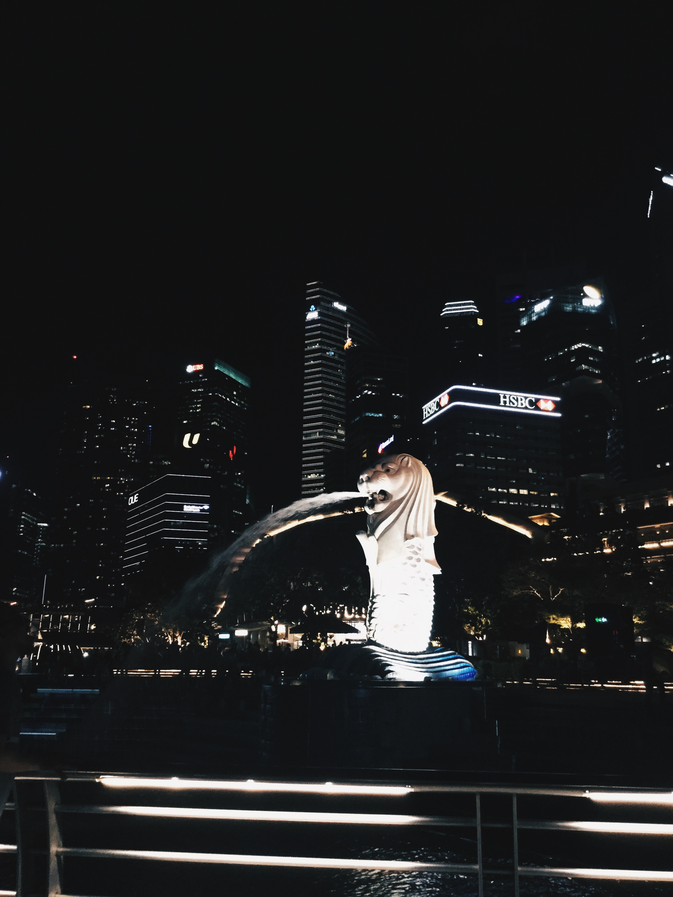

My friends and I went to Singapore during our semester break. Experienced first time to travel together only with friends without our parents. It was an exciting journey together and also to travel across the country.
We went there by train from Wakaf Bharu Railway Station to Johor Bharu Sentral Railway Station a night before and it takes
almost 13 hours in journey. After that we went to immigration and then went to Singapore by bus.
Our stay at Rucksack Inn at Lavendar Street. We booked our stay using Agoda.com . We stay at shared dorm
for female only and our two of our dorm mates are from Germany.
Our first visit went to Garden by the Bay, Cloud Forest and also Flower Dome. I am so amazed when we went in the Flower Dome
which is it so beautifull that full with flowers. During out visit, Sunflowers are the main attraction in there as the season of it. We also
managed to see the Garden Rhapsody which is the signature light and sound show of the Garden by the Bay
At night we went to Merlion Park, the iconic statue in Singapore.
 It was our last day in Singapore. We went to USS . This place was one in my wishlist to visit and I am so glad managed to go.
It was a day full with exciting day as we managed to try famous ride in USS known as Thrill Seekers Ride which is, World's First Transformers Ride, Worlds Tallest Dueling Roller Coaster and Revenge of Mummy.
Around 5 in the evening, we went out from Universal Studio Singapore and straight went to Immigration by Graab and we back home with train around 7:50 p.m. This experience was one of my memorable memories as I was travel with my friends and also Singapore was one in my travel wishlist.